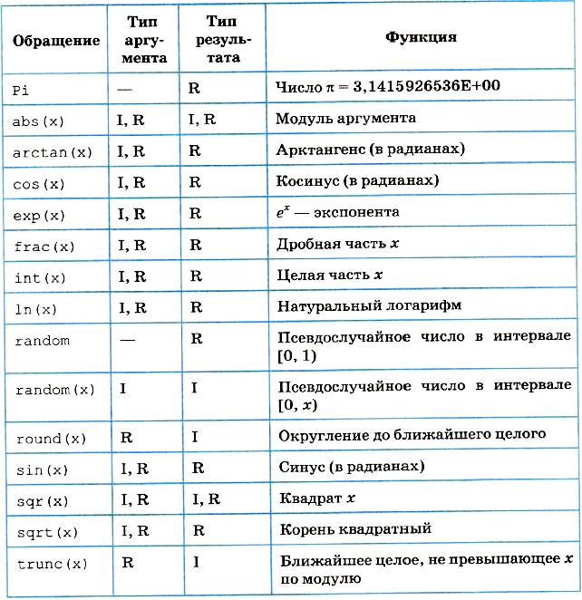

Операции, функции, выражения
Арифметические операции
К числовым типам данных относятся группы вещественных и целочисленных типов. К ним применимы арифметические операции и операции отношений.
Операции над данными бывают унарными (применимые к одному операнду) и бинарными (применимые к двум операндам). Унарная арифметическая операция в Паскале одна. Это операция изменения знака. Ее формат:
-<величина>
Бинарные арифметические операции стандартного Паскаля описаны в табл. 3.3. В ней символ «I» обозначает целые типы, символ «R» — вещественные типы.
Бинарные операции Паскаля
Стандартные функции и процедуры
В Паскале существует большое количество стандартных функций и процедур, к которым программист может обращаться в своих программах. Наиболее часто используются математические функции, например: sqrt (х) — квадратный корень, abs (х) — абсолютная величина, sin (х) и др. Часто используемые стандартные процедуры: Read(...) — процедура ввода, Write (...) — процедура вывода данных.
Стандартные функции и процедуры являются внешними подпрограммами по отношению к вызывающей их программе. Они объединены в модули, которые подключаются к основной программе и становятся доступными для использования. Наиболее часто используемые подпрограммы объединены в модуль под названием SYSTEM. Этот модуль подключается к программе автоматически.
Стандартные математические функции Паскаля
Для подключения других модулей необходимо в начале программы (после заголовка) записать строку:
Uses <имя модуля>
Для управления символьным выводом на экран используется стандартный модуль CRT. К программе он подключается командой:
Uses CRT
В дальнейшем из этого модуля мы будем использовать процедуру очистки экрана для символьного вывода, обращение к которой производится оператором ClrScr.
Арифметические выражения
Арифметическое выражение задает порядок выполнения действий над числовыми величинами. Арифметические выражения содержат числовые константы и переменные, арифметические операции, функции, круглые скобки. Одна константа или одна переменная — простейшая форма арифметического выражения.
Например, рассмотрим математическое выражение:

На Паскале оно выглядит так:
(2*A+Sqrt(0.5*sin(X+Y)))/(0.2*C-ln
Для того чтобы правильно записывать арифметические выражения, нужно соблюдать следующие правила:
- Все символы пишутся в строчку на одном уровне. Проставляются все знаки операций (нельзя пропускать знак *).
- Не допускаются два следующих подряд знака операций. (Нельзя: A+-B; можно: A+ (-B).)
- Операции с более высоким приоритетом выполняются раньше операций с меньшим приоритетом. Порядок убывания приоритетов:
- вычисление функции;
- унарная операция смены знака (-);
- *, /, div, mod;
- +, -.
- Несколько записанных подряд операций одинакового приоритета выполняются последовательно слева направо.
- Часть выражения, заключённая в скобки, вычисляется в первую очередь. (Например, в выражении (A+B) * (C-D) умножение производится после сложения и вычитания.)
Не следует записывать выражения, не имеющие математического смысла, например деление на нуль, логарифм отрицательного числа и т.п.
Пример. Цифрами сверху указан порядок выполнения операций:

Данное арифметическое выражение (на Паскале) соответствует следующему математическому выражению:

В Паскале нет операции или стандартной функции возведения числа в произвольную степень. Для вычисления ху рекомендуется поступать следующим образом:
а) если у — целое положительное значение, то его степень вычисляется через умножение; например х3 → х*х*х; большие степени следует вычислять умножением в цикле;
б) если у — целое отрицательное число, то степень вычисляется так:
xy = (1/x)|y|; а при y = 0: x0=1
в) если у — вещественное значение, не равное нулю, то используется следующая математическая формула: ху = еуln(х). На Паскале получим арифметическое выражение:
exp(Y*ln(x))
Очевидно, что в этом случае не допускается нулевое или отрицательное значение х. Для целого у такого ограничения нет.
Пример:

На Паскале это выражение выглядит так:
exp(1/3*ln(A+1))
Выражение имеет целочисленный тип, если в результате его вычисления получается величина целочисленного типа. Выражение имеет вещественный тип, если результатом его вычисления является вещественная величина.